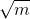
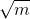

首页 > 编程笔记
C语言判断素数（求素数）（两种方法）
素数又称质数。所谓素数是指除了 1 和它本身以外，不能被任何整数整除的数，例如17就是素数，因为它不能被 2~16 的任一整数整除。
思路1)：因此判断一个整数m是否是素数，只需把 m 被 2 ~ m-1 之间的每一个整数去除，如果都不能被整除，那么 m 就是一个素数。
思路2)：另外判断方法还可以简化。m 不必被 2 ~ m-1 之间的每一个整数去除，只需被 2 ~  之间的每一个整数去除就可以了。如果 m 不能被 2 ~ 间任一整数整除，m 必定是素数。例如判别 17 是是否为素数，只需使 17 被 2~4 之间的每一个整数去除，由于都不能整除，可以判定 17 是素数。
原因：因为如果 m 能被 2 ~ m-1 之间任一整数整除，其二个因子必定有一个小于或等于 ，另一个大于或等于 。例如 16 能被 2、4、8 整除，16=2*8，2 小于 4，8 大于 4，16=4*4，4=√16，因此只需判定在 2~4 之间有无因子即可。
两种思路的代码请看解析。
思路1) 的代码：
思路2)的代码：
两段代码的输出结果相同。
第一次运行结果：
第二次运行结果：
第三次运行结果：
思路1)：因此判断一个整数m是否是素数，只需把 m 被 2 ~ m-1 之间的每一个整数去除，如果都不能被整除，那么 m 就是一个素数。
思路2)：另外判断方法还可以简化。m 不必被 2 ~ m-1 之间的每一个整数去除，只需被 2 ~  之间的每一个整数去除就可以了。如果 m 不能被 2 ~ 间任一整数整除，m 必定是素数。例如判别 17 是是否为素数，只需使 17 被 2~4 之间的每一个整数去除，由于都不能整除，可以判定 17 是素数。
原因：因为如果 m 能被 2 ~ m-1 之间任一整数整除，其二个因子必定有一个小于或等于 ，另一个大于或等于 。例如 16 能被 2、4、8 整除，16=2*8，2 小于 4，8 大于 4，16=4*4，4=√16，因此只需判定在 2~4 之间有无因子即可。
两种思路的代码请看解析。
思路1) 的代码：
#include <stdio.h>
int main(){
int a=0; // 素数的个数
int num=0; // 输入的整数
printf("输入一个整数：");
scanf("%d",&num);
for(int i=2;i<num;i++){
if(num%i==0){
a++; // 素数个数加1
}
}
if(a==0){
printf("%d是素数。\n", num);
}else{
printf("%d不是素数。\n", num);
}
return 0;
}
思路2)的代码：
#include <stdio.h> #include <math.h> void main(){ int m; // 输入的整数 int i; // 循环次数 int k; // m 的平方根 printf("输入一个整数："); scanf("%d",&m); // 求平方根，注意sqrt()的参数为 double 类型，这里要强制转换m的类型 k=(int)sqrt( (double)m ); for(i=2;i<=k;i++) if(m%i==0) break; // 如果完成所有循环，那么m为素数 // 注意最后一次循环，会执行i++，此时 i=k+1，所以有i>k if(i>k) printf("%d是素数。\n",m); else printf("%d不是素数。\n",m); return 0; }
两段代码的输出结果相同。
第一次运行结果：
输入一个整数：1 1是素数。
第二次运行结果：
输入一个整数：97 97是素数。
第三次运行结果：
输入一个整数：10 10不是素数。
关注公众号「站长严长生」，在手机上阅读所有教程，随时随地都能学习。内含一款搜索神器，免费下载全网书籍和视频。

微信扫码关注公众号